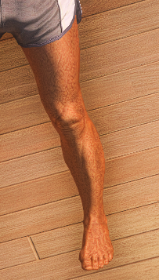

Lecteur YouTube - Prêt
Santa Maria Ink
Choisissez votre catégorie de tatouage
Tête
Voir les tatouages
Torse
Voir les tatouages

Jambe Gauche
Voir les tatouages
Jambe Droite
Voir les tatouages
Bras Gauche
Voir les tatouages
Bras Droit
Voir les tatouages